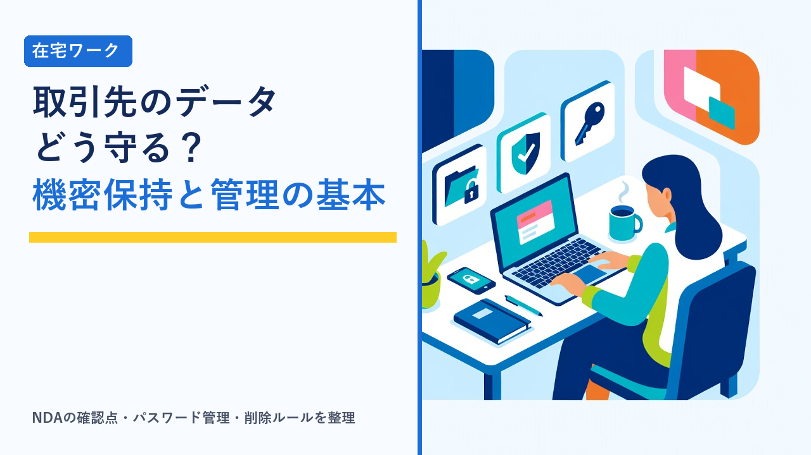

在宅ワークの情報管理：取引先のデータを扱うときの機密保持とパスワード管理の基本
2026-10-19 更新

在宅ワークでは、データ入力の元になる顧客リスト、記事執筆のための社内資料、経理代行で預かる請求書、SNS運用で渡されるアカウントのログイン情報など、取引先の「外に出してはいけない情報」を自宅で扱う場面が日常的にあります。会社勤めであれば情シス部門や社内ルールが守ってくれる部分を、在宅ワーカーは自分で管理しなければなりません。情報の扱いを誤ると、案件を失うだけでなく、契約違反として損害賠償を求められるリスクもあります。この記事では、在宅ワークで取引先のデータを扱うときに押さえておきたい機密保持の考え方と、パスワード管理の基本を客観的に整理します。
なぜ在宅ワーカーに情報管理が求められるのか
在宅ワーカーが情報管理を求められる根拠は、大きく3つあります。
- 契約上の義務：業務委託契約書や秘密保持契約（NDA）、クラウドソーシングサイトの利用規約には、業務で知った情報を第三者に漏らさない・目的外に使わないという条項が含まれているのが一般的です。これに違反すると、契約解除や損害賠償の対象になります。
- 法律上の義務：預かるデータに個人情報（氏名・住所・メールアドレスなど）が含まれる場合、発注者は個人情報保護法で「委託先を監督する義務」を負っています。そのため、受注者である在宅ワーカーにも、保管方法や削除方法について発注者から具体的な指示が出されることがあります。
- 信用の問題：継続案件や単価交渉は、発注者からの信頼が前提です。情報の扱いが丁寧なワーカーは、その点だけでも選ばれやすくなります。
契約書や報酬の基本的な確認事項は在宅ワークで注意したいこと（契約・報酬・確定申告の基礎知識まとめ）で整理しています。
扱う情報の種類と注意の度合い
すべての情報を同じ厳しさで管理する必要はありません。まず、預かった情報がどの種類に当たるかを把握し、それに応じた扱いをするのが現実的です。
| 情報の種類 | 例 | 注意の度合い | 基本的な扱い |
|---|---|---|---|
| 公開情報 | 取引先の公式サイトの内容、公開済みのプレスリリース | 低い | 通常の扱いでよいが、未公開の修正版などは別 |
| 社内情報 | 未公開の企画書、原稿、価格表、社内マニュアル | 中〜高い | 案件の目的以外に使わない。SNSやポートフォリオに無断で載せない |
| 個人情報 | 顧客リスト、アンケート回答、名刺データ、問い合わせメール | 高い | 保管場所を限定し、作業終了後は削除。家族を含め他人の目に触れさせない |
| 認証情報 | SNSアカウント、管理画面、クラウドサービスのID・パスワード | 最も高い | メールやチャットに平文で残さない。可能なら権限を分けた専用アカウントの発行を依頼する |
特に注意したいのが、自分の実績として公開したくなる「社内情報」と、便利さから使い回しや平文保存をしがちな「認証情報」の2つです。ポートフォリオに成果物を載せたい場合は、契約で許可されているか、または発注者に個別に確認してから掲載するのが原則です。
秘密保持契約（NDA）で確認したいポイント
NDAは「サインして終わり」ではなく、自分が何を守る義務を負うのかを把握するための書面です。受注前に、次の項目を確認しておくと、後からのトラブルを避けやすくなります。
| 項目 | 確認すること | 気をつけたい点 |
|---|---|---|
| 秘密情報の範囲 | 何が「秘密情報」に当たるか（提供された資料すべてか、「秘密」と明示されたものだけか） | 範囲が広いほど、ポートフォリオ掲載や実績公開の自由度は下がる |
| 守秘義務の期間 | 契約終了後も義務が続くか、何年続くか | 「契約終了後も無期限」という条項は珍しくない |
| 返還・削除の義務 | 終了時にデータを返す・消す義務があるか、消したことの報告が必要か | 削除報告の方法（メール・書面）が決まっていることがある |
| 再委託の禁止 | 作業の一部を家族や他のワーカーに任せてよいか | 禁止されている場合、家族に入力を手伝ってもらうだけでも違反になる |
| 損害賠償の範囲 | 違反時の賠償の上限が定められているか | 上限がなく、受注者側に一方的に不利な条項には注意 |
| 作業環境の指定 | 指定のツールだけで作業する、ダウンロード禁止、自宅以外での作業禁止などの条件があるか | 自分の作業スタイルで守れるかを受注前に判断する |
内容に不明点があれば、受注前に発注者へ質問するのが基本です。質問に答えてくれない、条項が極端に一方的、といった案件は、情報管理以前の問題として警戒したほうがよい場合があります。見分け方は在宅ワークの危険な案件の見分け方：前払い要求・高額教材・情報商材の注意点で整理しています。
パスワード管理の基本
取引先のアカウントを預かる案件では、パスワードの扱いがそのまま情報管理の質になります。管理方法ごとの特徴を比較すると、次のようになります。
| 管理方法 | 手間 | 安全性 | 主な問題点 |
|---|---|---|---|
| 同じパスワードを使い回す | 最も少ない | 低い | 1つのサービスが漏えいすると、他のサービスにも同じ組み合わせで侵入されやすい |
| 紙のメモ・手帳 | 少ない | 中（置き場所次第） | 紛失や家族の目に触れるリスク。在宅では意外と見られやすい |
| ブラウザのパスワード保存 | 少ない | 中 | PCにログインできる人は誰でも見られる。家族共用PCでは不向き |
| パスワード管理アプリ | 導入時にやや手間 | 高い | マスターパスワードを忘れると復旧が難しい。無料版と有料版で機能差がある |
| 取引先の共有ツールで管理 | 取引先の運用次第 | 高い（権限を分けられる） | 自分では管理できない分、指示された使い方を守る必要がある |
一般的に推奨されている考え方は、「長く・複雑で・サービスごとに違うパスワード」を、パスワード管理アプリで記録するというものです。かつて勧められていた定期的な変更は、現在は必須とされておらず、漏えいの兆候があったときに変更すればよいという考え方が主流になっています。あわせて、次の2点を押さえておくと安全性が大きく変わります。
- 2段階認証（多要素認証）を有効にする：パスワードに加えて、スマホのアプリやSMSで届くコードを求める仕組みです。パスワードが漏れても、それだけでは侵入されにくくなります。取引先のアカウントを預かる場合、2段階認証のコードがどちらのスマホに届くのかを事前に決めておく必要があります。
- 認証情報をメールやチャットに平文で残さない：ID・パスワードをメッセージで受け取った場合は、管理アプリに移してから、元のメッセージは削除するのが基本です。送る側になるときも同様で、可能なら発注者側に権限を限定した専用アカウントを発行してもらうと、自分のパスワードを預ける必要がなくなります。
データの受け渡し・保管・削除のルール
ファイルそのものの扱いについても、場面ごとの基本があります。
| 場面 | 基本的な対応 | 避けたいこと |
|---|---|---|
| 受け取るとき | 取引先が指定したツール（共有ストレージ・業務チャットなど）で受け取る | 個人のフリーメールや私用SNSで受け取る、送られてきたデータを無断で別の場所にコピーする |
| 保管するとき | 案件ごとに専用フォルダを作り、PCのログインパスワードとスリープ時のロックを設定する | デスクトップに放置する、家族と共用のクラウドストレージに同期する |
| 作業するとき | 必要な部分だけを開き、印刷は原則しない。印刷が必要なら作業後に処分する | スクリーンショットをスマホに保存する、作業中の画面を家族や来客に見える位置に置く |
| 納品するとき | 指定の方法で納品し、個人情報を含むファイルは別途パスワードや期限付きリンクなどの方法を発注者と決める | 宛先を確認せずに送る、関係ないファイルを同じフォルダに入れたまま共有する |
| 終了後 | 契約の定めに従い、作業フォルダ・ダウンロード・ごみ箱・同期先のコピーまで削除する。必要なら削除報告をする | 「いつか使うかも」と残しておく、納品物の控えと取引先データを一緒に保管する |
業務用のチャット・ファイル共有ツールの特徴は在宅ワークで使う定番ツール比較：チャット・タスク管理・ファイル共有の選び方で整理しています。取引先が指定する場合はそれに従い、自分で選べる場合は「アクセス権限を相手ごとに分けられる」「共有リンクに期限を付けられる」ものを選ぶと、情報管理がしやすくなります。
作業環境で気をつけたいこと
在宅ワーク特有のリスクは、作業場所が「自宅」であることから生まれます。
- 家族と共用のPC：仕事用のユーザーアカウントを分け、ログインパスワードを設定します。ブラウザのパスワード保存や自動ログインは、共用PCでは特に避けたい運用です。予算が許せば、仕事専用のPCを用意するのが最も確実です。環境づくりの優先順位は在宅ワークの作業環境づくり：机・椅子・ネット回線で優先度が高いのはどれで整理しています。
- 自宅のWi-Fi：ルーターの管理画面のパスワードが初期設定のままになっていないか、暗号化方式が古いもの（WEPなど）になっていないかを確認します。
- カフェや外出先での作業：公衆Wi-Fiでの作業は、通信の盗み見や偽のアクセスポイントのリスクがあります。取引先のデータを扱う作業は自宅で行い、外出先で行うなら契約で禁止されていないかの確認とあわせて、通信の保護を考える必要があります。詳しくは公衆Wi-Fiは安全？カフェ・ホテルで動画を見る前に知っておきたい通信の話で整理しています。
- オンライン会議の画面共有：画面全体を共有すると、通知や別の取引先のファイル名が映り込むことがあります。共有するウィンドウを限定し、通知はオフにしておくのが基本です。
- OSやソフトの更新：更新を長期間放置したPCは、既知の弱点を突かれやすくなります。セキュリティ更新は自動適用にしておくのが一般的な推奨です。
万一のときの対応手順
注意していても、誤送信やPCの紛失・故障は起こりえます。そのときに評価されるのは「起こしたこと」より「その後の対応」です。
- すぐに発注者へ連絡する：隠したり自分で解決しようとして時間が経つほど、被害が広がり信頼も失われます。何が・いつ・どこへ・どの範囲で起きたかを、わかっている範囲で正確に伝えます。
- 被害の拡大を止める：誤送信ならメールの取り消しや相手への削除依頼、アカウント情報の漏えいならパスワード変更と2段階認証の確認、PC紛失なら遠隔ロックやログアウト操作を行います。
- 発注者の指示に従う：個人情報が関わる場合、発注者側で本人や行政機関への対応が必要になることがあり、受注者が独自に動くとかえって混乱します。
- 記録を残す：発生日時、内容、対応の経過をメモしておきます。契約上の責任を整理するときに必要になります。
クラウドソーシングサイトでは、案件の条件や秘密保持に関するルールがサイト上で明示され、メッセージやファイルのやり取りもサイト内で記録されるため、情報管理の基本を守りながら案件を進めやすい環境になっています。
選び方のポイント
- 受注前にNDA・契約書の秘密保持条項を読む：秘密情報の範囲、守秘義務の期間、返還・削除の義務、再委託の禁止、作業環境の指定を確認し、自分の作業スタイルで守れるかを判断します。
- 情報の種類ごとに扱いを分ける：公開情報・社内情報・個人情報・認証情報で注意の度合いは違います。特に認証情報は平文で残さない、個人情報は終了後に削除する、を徹底します。
- パスワードは「長く・複雑・使い分け」を管理アプリで：定期変更より、サービスごとに異なるパスワードと2段階認証の方が効果的、という考え方が現在の主流です。
- 受け渡しは取引先指定のツールで、保管は案件ごとの専用フォルダで：私用のメール・SNS・家族共用のクラウドにデータを置かないことが、最も起こりやすいトラブルを防ぎます。
- 作業は自宅の管理された環境で：家族共用PCならアカウントを分け、外出先での作業は契約と通信の安全性を確認してから。画面共有では共有範囲を限定します。
- 万一のときは、隠さずすぐに連絡する：対応の速さと正確さが、その後の信頼を左右します。
企業の社内データや顧客情報を日常的に扱う本格的な案件は、NDAの締結や作業環境の指定が前提になることが多く、報酬水準もそれに応じて高くなる傾向があります。エージェントが条件を整理して紹介するサービスでは、こうした契約面の確認を事前に進めやすいのが特徴です。
よくある質問
秘密保持契約（NDA）を結んでいない案件なら、情報の扱いは自由ですか？
そうではありません。NDAという独立した書面がなくても、業務委託契約書やクラウドソーシングサイトの利用規約に秘密保持の条項が含まれているのが一般的で、それに同意して案件を受けた時点で守る義務が生じます。また、業務上知った情報を外部に漏らしたり、別の目的に使ったりすれば、契約違反として損害賠償を求められる可能性があります。個人情報が含まれる場合は、発注者が個人情報保護法上の委託先監督義務を負っているため、発注者から安全管理に関する具体的な指示が出されることもあります。書面の有無にかかわらず、預かった情報は案件の目的以外に使わず、第三者に見せないのが基本です。
パスワードは定期的に変更したほうがよいですか？
現在は、漏えいの兆候がない限り定期的な変更は必須ではなく、むしろ長く複雑なパスワードを設定してサービスごとに使い分けることが優先される、という考え方が一般的です。定期変更を義務にすると、覚えやすい単純なパターンに流れやすく、かえって推測されやすくなるためです。ただし、利用しているサービスで情報漏えいが発表された場合、不審なログイン通知が届いた場合、取引先から変更を求められた場合は、速やかに変更する必要があります。取引先の社内規程で定期変更が定められている場合は、その規程に従います。
納品が終わった後、取引先から預かったデータはどうすればよいですか？
契約書やNDAに「契約終了後は返還または削除する」という条項があれば、それに従って処理します。明記されていない場合でも、案件の目的が終わった後に手元に残しておく理由はないため、発注者に確認のうえ削除するのが安全です。削除する際は、作業フォルダだけでなく、ダウンロードフォルダ、ごみ箱、クラウドストレージの同期先、メールの添付ファイルなど、コピーが残りやすい場所も確認します。一方で、自分が納品した成果物の控えや、報酬の支払記録など、確定申告や納品の証拠として必要なものは、取引先のデータそのものとは分けて保管しておきます。